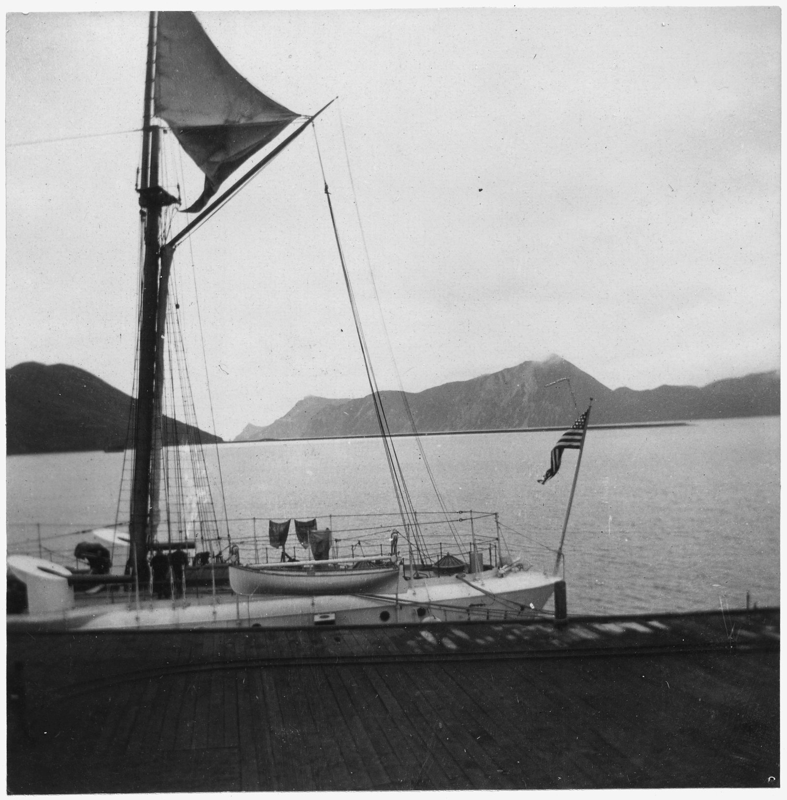
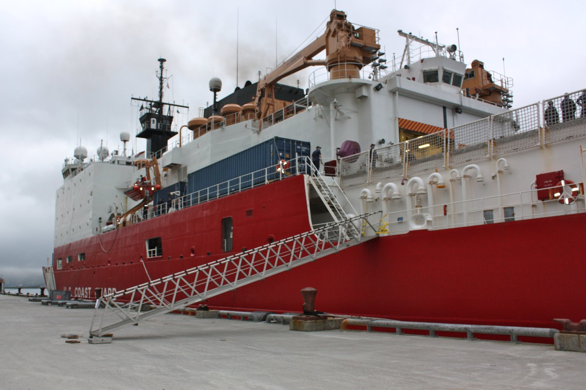

Directory / Dutch Harbor, AK
Dutch Harbor tides
High and low tides for the coming week from NOAA station 9462611 (53.8917, -166.537). Times are local (LST/LDT). Heights are feet above Mean Lower Low Water (MLLW).
Harbor then & now
Historic

Current

Official NOAA predictions Station home Printable tide calendar View on Windy
Port Sponsor — Dutch Harbor, AK
Top placement for fuel docks, marinas, yards, and marine businesses.
$25–$50 / month
Friday, November 6, 2026
| Tide | Time (local) | Height (MLLW) |
|---|---|---|
| High | 4:14 AM | 2.7 ft |
| Low | 8:46 AM | 1.9 ft |
| High | 2:55 PM | 3.6 ft |
| Low | 10:21 PM | 0.0 ft |
Saturday, November 7, 2026
| Tide | Time (local) | Height (MLLW) |
|---|---|---|
| High | 6:01 AM | 2.9 ft |
| Low | 9:36 AM | 2.6 ft |
| High | 3:08 PM | 3.5 ft |
| Low | 11:08 PM | -0.2 ft |
Sunday, November 8, 2026
| Tide | Time (local) | Height (MLLW) |
|---|---|---|
| High | 7:43 AM | 3.3 ft |
| Low | 10:49 AM | 3.1 ft |
| High | 3:11 PM | 3.4 ft |
| Low | 11:51 PM | -0.2 ft |
Monday, November 9, 2026
| Tide | Time (local) | Height (MLLW) |
|---|---|---|
| High | 9:07 AM | 3.6 ft |
Tuesday, November 10, 2026
| Tide | Time (local) | Height (MLLW) |
|---|---|---|
| Low | 12:33 AM | -0.2 ft |
| High | 10:03 AM | 3.9 ft |
Wednesday, November 11, 2026
| Tide | Time (local) | Height (MLLW) |
|---|---|---|
| Low | 1:15 AM | -0.2 ft |
| High | 10:42 AM | 4.1 ft |
Thursday, November 12, 2026
| Tide | Time (local) | Height (MLLW) |
|---|---|---|
| Low | 1:58 AM | -0.1 ft |
| High | 11:14 AM | 4.2 ft |
Friday, November 13, 2026
| Tide | Time (local) | Height (MLLW) |
|---|---|---|
| Low | 2:43 AM | 0.0 ft |
| High | 11:42 AM | 4.2 ft |
Marine weather & cameras
NWS marine forecast — Unalaska Bay (PKZ771)
Issued 248 PM AKST Thu Nov 5 2026. Cached snapshot fetched 2026-11-05 21:10 AKST from NWS text product. Official zone forecast · Raw text
- .TONIGHT...W wind 15 kt becoming SW after midnight. Seas 2 ft.
- .FRI...Variable wind less than 10 kt becoming SW 10 kt in the afternoon. Seas 2 ft.
- .FRI NIGHT...W wind 10 kt. Seas 2 ft.
- .SAT...Variable wind less than 10 kt. Seas 2 ft.
- .SAT NIGHT...Variable wind less than 10 kt. Seas 3 ft.
- .SUN...NE wind 10 kt. Seas 3 ft.
- .MON...NW wind 20 kt. Seas 6 ft.
- .TUE...W wind 25 kt. Seas 6 ft.
Nearby NDBC observation — Dutch Harbor Pilot Station (DPXA2)
wind 120°, 3 kt, gust 5 kt, air 32°F, 997.4 hPa
Observation time 2026-11-05 20:42 AKST (converted to AKST). Attribution: NOAA NDBC station DPXA2. Snapshot fetched 2026-11-05 21:10 AKST.
Harbor webcams
- FAA WeatherCams — Dutch Harbor / Unalaska Airport (PADU) (free public link; not embedded)
- FAA WeatherCams — Unalaska camera site summary
No free city/harbor webcam verified beyond FAA WeatherCams. We link only; we do not rehost images.
Local marine & shore directory
Verified public listings only. List free · Get featured
Marine services
Moorage & marinas
Fuel docks
Shipyards & haul-outs
No verified listing yet — list your business free.
Boat repair & mechanics
No verified listing yet — list your business free.
Marine suppliers & chandleries
No verified listing yet — list your business free.
Electronics sales & installation
No verified listing yet — list your business free.
Welding & fabrication
No verified listing yet — list your business free.
Canvas & upholstery
No verified listing yet — list your business free.
Surveyors
No verified listing yet — list your business free.
Towing & salvage
No verified listing yet — list your business free.
Ice & bait
No verified listing yet — list your business free.
Fishing charters
No verified listing yet — list your business free.
Ashore for boaters
Groceries & provisioning
No verified listing yet — list your business free.
Hardware
No verified listing yet — list your business free.
Liquor stores
No verified listing yet — list your business free.
Laundromats
No verified listing yet — list your business free.
Showers
Lodging
No verified listing yet — list your business free.
Restaurants
No verified listing yet — list your business free.
Medical clinics
Pharmacies
No verified listing yet — list your business free.
Post office & shipping
No verified listing yet — list your business free.
Airport & floatplane
No verified listing yet — list your business free.
Propane
No verified listing yet — list your business free.
Auto & truck rental
No verified listing yet — list your business free.
Local news — Dutch Harbor, AK
Plain links to local outlets. Always check the source for the latest. Local news partners welcome.
Free weekly tides & marine weather
Get a short email for your port. We do not sell your email. Privacy.
Mailing list powered by Buttondown.
Boating gear on Amazon
As an Amazon Associate I earn from qualifying purchases.
Helpful search links for common gear. Prices and availability are on Amazon.
Other Alaska ports
Also see Unalaska tides (NOAA 9462620).
All Pacific Tides ports · Printable Dutch Harbor tide calendar
Sources
- NOAA CO-OPS station 9462611 — Dutch Harbor
- Predictions API:
api.tidesandcurrents.noaa.gov/api/prod/datagetter - Fetched 2026-11-05 21:11 AKST from NOAA CO-OPS datagetter (product=predictions, interval=hilo, datum=MLLW, time_zone=lst_ldt, units=english) for station 9462611, 2026-11-06 through 2026-11-13.